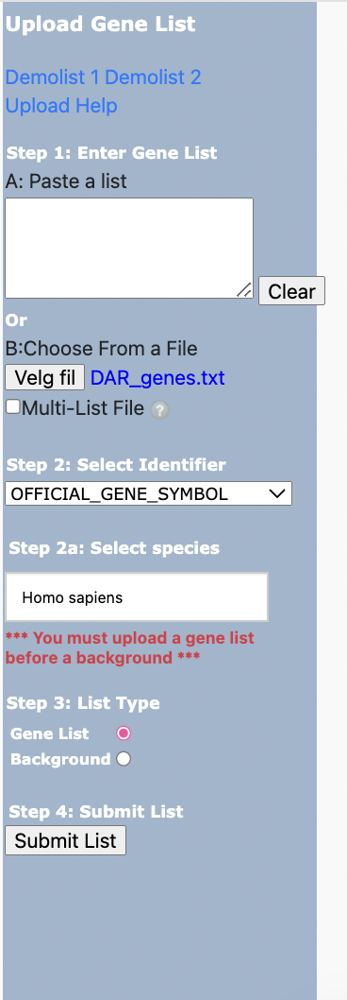

Further analysis - Example
To gain biological insight from you samples it is not enough to just locate the differnetial binding sights, but generally we are interested in how they are related to other biological interactions, metabolic pathways, diseases ect.
Therefore, we have made a simple example on how you can continue your analysis after using the EpiMapper Python package.
Lets say you are interested in the genes associated with the peaks annotated to transcriptions starts sites (TSS), by utilizing the code below you can extract the gene names.
import os
import pandas as pd
import glob
#Please change the path to your chosen out directory:
out_dir="/change/to/your/out/directory"
annotated_file = "Epimapper/differential_analysis/DAR/*genome.csv"
df =pd.read_csv(glob.glob(os.path.join(out_dir,annotated_file))[0], sep="\t")
#Here you may change the "TSS" to any of the other column names to selecte the genes associated with the genomic reagion you are interested in
selected_column = df.filter(regex="^TSS")
# Split the selected column values based on '~' delimiter
selected_df = selected_column.iloc[:, 0].str.split('~', expand=True)
# Concatenate all the split values into a single Series
combined_column = pd.concat([selected_df[col] for col in selected_df.columns], ignore_index=True)
# Drop all empty rows
clean = combined_column.dropna(how="all")
# Split the combined values based on '||' delimiter
df_all = clean.str.split("\|\|", expand=True)
# Split the selected column values based on ':' delimiter
df_position=df_all.iloc[:,0].str.split(":", expand=True)
# Split the selected column values based on ':' delimiter
df_gene=df_all.iloc[:,2].str.split(":", expand=True)
# Split position and gene into separate DataFrames
out_df = pd.concat([df_position, df_gene], axis=1, ignore_index=True)
df_gene = out_df.iloc[:,4]
# Save gene DataFrame to DAR_genes.txt
df_gene.to_csv(os.path.join(out_dir,"DAR_genes.txt"), index=False, header=False)
# Save cleaned DataFrame to cleaned_genome.csv
out_df.to_csv(os.path.join(out_dir,"cleaned_genome.csv"), index=False, header=["chr","start","end","gene_id","gene_name","strand","start_ann","end_ann"])
The code above will create a new “DAR_gene.txt” which contains the gene names associated with the TSS sites that the differnential binding sites were annotated to.
Database for Annotation, Visualization and Integrated Discovery (DAVID)
The DAVID provides a combination of choprehesive tools that may be used to analyse and understand the biological connections between a large list of genes. The “DAR_gene.txt” may be easily submittet to the DAVID by uploading the file to the Analysis Wizard tool from DAVID, see the picture below. Please select offical_gene_symbol in step 2, since that is the format of the genes in the newly created “DAR_gene.txt”.
<br>
{kind=link}
By running this analysis you will receive great knowledge about the functionality of the genes, though metabolic pathways, cellular location of their conding protein as well as their significance in disease. This is a quick and simple way to gain furhter insights into the biological meaning of your experiment, while creating an indicator of which pathways are affected/involved by the differntial bindning sites.